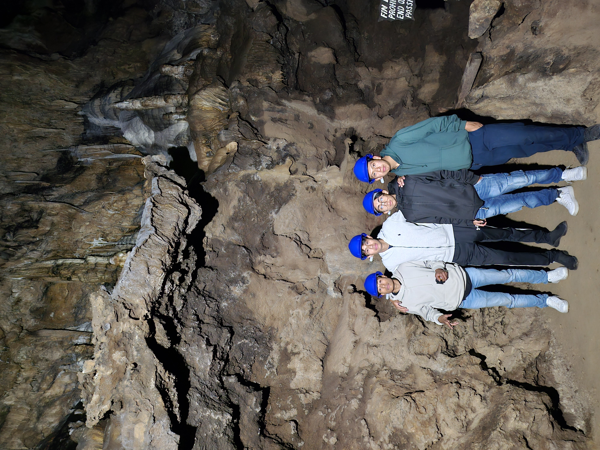

|
San Cristobal De Las Casas
- San Cristóbal de las casas ha sido a lo largo de los años un lugar especial para los turistas. Al cual cada año recibimos con honor, respeto y humildad ante los turistas y personas mexicanas.
- Con una presencia tecnica y una rica tradición colonial que lo mantienen como uno de los destinos favoritos del turismo extranjero. Su edificación siguió un proceso similar al de otras ciudades coloniales que se crearon
en el territorio novohispano. En primer término, se trazó la plaza principal, a cuyo entorno se designaron los lugares que ocuparían las construcciones más importantes.San cristobal tiene el comocimiento de la arquitectura. En esta pagina nos
centraremos en lugares natuales, que estas a unos cuantos kilometros de san cristobal.

- Sobresale por su verde paisaje cubierto por la neblina y por sus magníficas
- construcciones virreinales de estilo barroco, plateresco y neoclásico.
Uno de estos lugares mas apreciados por los avistantes son:
- Rancho Nuevo
- Finca del Ovispo
- Las canastas
- Las grutas del mamut
- Iglesia del Cerrillo
- Molino los arcos
- A continuacion les presentaremos imagenes que hicimos durante el trascurso de nuestro camino
- en esta pagina nos concentraremos en las grutas que para nuestro alcanze este no se menciona en algunas otras paginas web